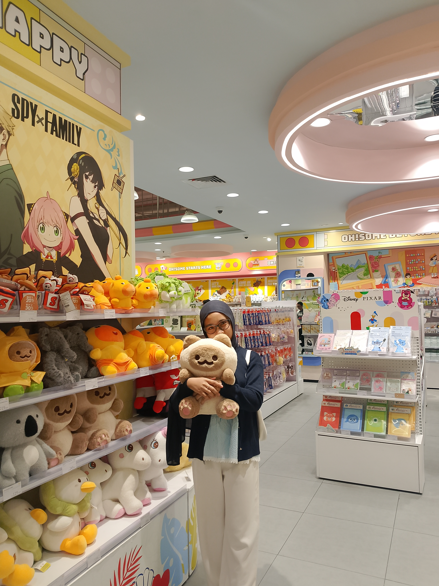

Pelajar MA Muhammadiyah 1 Paciran (MAMSaka)

Pelajar MA Muhammadiyah 1 Paciran (MAMSaka), Lamongan, Jawa Timur
Halo, selamat datang di website pribadi Maghfira Kartika Putri. Website ini dibuat sebagai media untuk memperkenalkan diri, berbagi informasi mengenai pendidikan, hobi, pengalaman, serta berbagai kegiatan yang saya ikuti sebagai pelajar di MA Muhammadiyah 1 Paciran (MAMSaka).
Saya adalah seorang siswi yang memiliki semangat belajar tinggi, disiplin, dan selalu berusaha mengembangkan kemampuan diri. Saya percaya bahwa pendidikan merupakan bekal penting untuk meraih masa depan yang lebih baik.
Perkenalkan, nama saya Maghfira Kartika Putri. Saat ini saya menempuh pendidikan di MA Muhammadiyah 1 Paciran (MAMSaka). Saya merupakan pribadi yang ramah, bertanggung jawab, dan senang bekerja sama dengan orang lain. Saya selalu berusaha untuk belajar dengan sungguh-sungguh serta memanfaatkan setiap kesempatan untuk meningkatkan kemampuan dan pengetahuan yang saya miliki.
Saya memiliki ketertarikan untuk mempelajari hal-hal baru, baik dalam bidang akademik maupun keterampilan lainnya. Bagi saya, setiap pengalaman adalah pelajaran berharga yang dapat membantu saya menjadi pribadi yang lebih baik.
Saya bercita-cita menjadi pribadi yang sukses, mandiri, dan dapat membanggakan kedua orang tua. Saya ingin terus belajar, mengembangkan kemampuan, serta memberikan manfaat bagi masyarakat, bangsa, dan agama.
Membaca merupakan salah satu hobi yang saya sukai. Dengan membaca buku, artikel, maupun informasi edukatif lainnya, saya dapat menambah wawasan, pengetahuan, dan inspirasi untuk terus berkembang.
Saya juga senang mendengarkan musik di waktu luang. Musik dapat membantu saya merasa lebih rileks, meningkatkan semangat, dan membuat suasana belajar menjadi lebih menyenangkan.
Saya memiliki minat yang besar untuk mempelajari hal-hal baru, terutama yang dapat meningkatkan keterampilan dan pengetahuan.
Saya tertarik mengikuti berbagai kegiatan organisasi karena dapat melatih kemampuan komunikasi, kepemimpinan, kerja sama tim, dan tanggung jawab.
Email : maghfirakartikaputri@gmail.com
Instagram : @krtkptr10
TikTok : @fraaptry
Terima kasih telah mengunjungi website pribadi saya. Semoga website ini dapat memberikan informasi yang bermanfaat dan menjadi sarana untuk mengenal saya lebih dekat sebagai pelajar MA Muhammadiyah 1 Paciran (MAMSaka).
"Terus belajar, berkembang, dan berusaha menjadi versi terbaik dari diri sendiri."